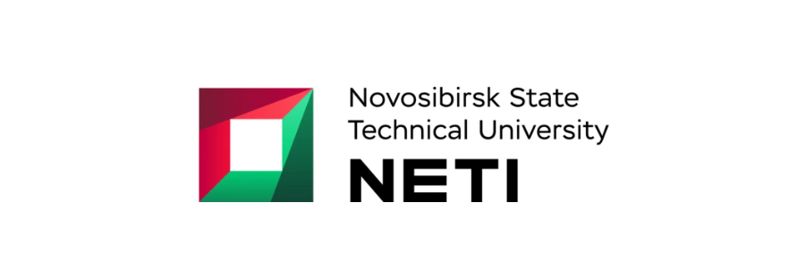
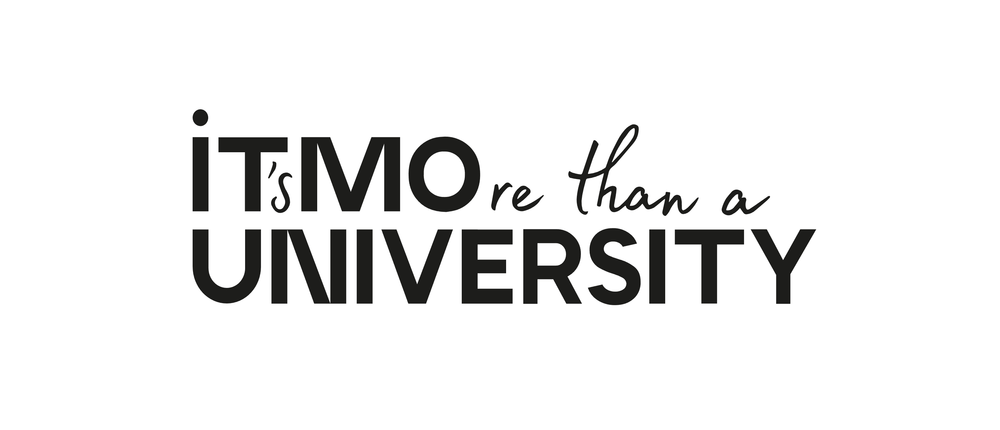
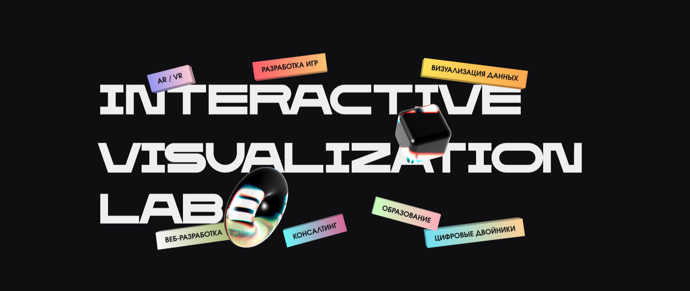
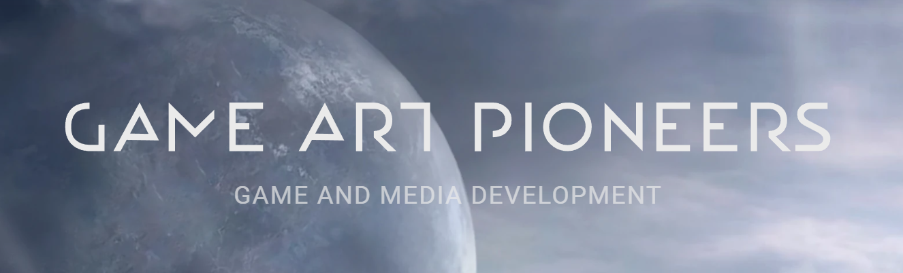
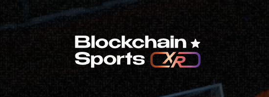

Добро пожаловать, дорогой гость! 👋
Снизу располагается таймлайн с точками, которые связаны с важными моментами в моём образовании и рабочем опыте. Справа располагается карта с географическим расположением данных мест.
Нажмите на интересующую вас точку на таймлайне или на карте.

Факультет автоматики и вычислительной техники. Программная инженерия.
Приобретены ключевые навыки в программировании и проектировании архитектуры приложений. Написана дипломная работа на движке Unity. Решено поступать в магистратуру для развития в игровой разработке.

Школа разработки видеоигр. Технологии разработки компьютерных игр.
Углубленная подготовка по компьютерной графике, разработке игр и геймдизайну.

Ахматова Digital и rtim.city

3D Action RPG

VR Multiplayer Shooter
VR Multiplayer Racing Simulator
rtim.city